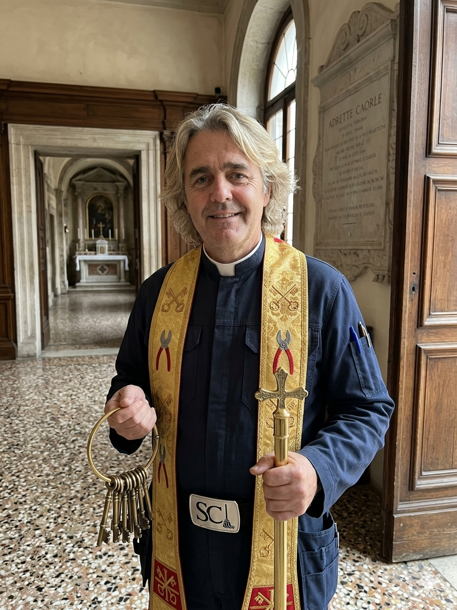

„Der adrette Caorle“ – Schutzpatron der universellen Ordnung, der Kehrwoche und des Facility Management
Es geschah im frühen Mittelalter, als das Chaos über die Siedlungen der oberen Adria hereinbrach. Quietschende Scharniere, verstopfte Aquädukte und unbeseitigte Laubberge bedrohten den inneren Frieden der Gemeinden. In dieser finsteren Epoche trat ein Mann namens Caorle hervor.
Er war stets von makelloser Erscheinung. Während andere im Schlamm arbeiteten, bewahrte Caorle ein stets gepflegtes Äußeres, glänzendes Haar und ein einladendes Lächeln – was ihm in den Chroniken der Erzdiözese den Beinamen „Der adrette Caorle“ einbrachte.
Caorle zog von Kloster zu Kloster, reparierte die Schlösser der Pforten, regulierte die Fußbodenheizungen der Thermen und sorgte dafür, dass die Mülltrennung der Mönche fehlerfrei funktionierte. Seine Askese bestand darin, niemals einen Krümel auf dem Teppich zu dulden.
Jahrhundertelang galt das wahre Antlitz des Heiligen als verschollen. Doch bei Ausgrabungen in einem geheimen Kellerabteil (hinter einigen alten Winterreifen und einer Kiste ausrangierter Glühbirnen) wurde dieses unschätzbare Zeugnis der Frömmigkeit wiederentdeckt:

Das Bild zeigt den Heiligen in seiner charakteristischen, adretten Garderobe. Die Unterschrift wurde von gläubigen Hausmeistern des 14. Jahrhunderts mit akribischen Schriftsetzer-Lettern hinzugefügt, um jeden Zweifel an seiner Identität auszuschließen.
Die wunderschöne Küstenstadt Caorle an der italienischen Adria verdankt ihren Namen einzig und allein diesem großen Mann. Die Legende besagt, dass die ersten Siedler die Lagune völlig verschmutzt vorfanden. Algen, Treibholz und wild umherliegende Gondeln machten ein Leben unmöglich.
Da erschien der adrette Caorle. Er krempelte die Ärmel hoch, fegte die Strände in exakt parallelen Bahnen und strich die Häuser der Stadt in leuchtenden, bunten Farben an, damit man Schmutz sofort erkennen konnte. Die dankbaren Einwohner nannten ihre Stadt fortan nach ihm und erklärten die Farbpalette ihrer Hauswände zum Staatsgeheimnis.
Sankt Caorle wurde im Jahr 1642 offiziell heiliggesprochen, nachdem die Kongregation für die Riten drei unbestreitbare Wunder anerkannte:
Es wird berichtet, dass Caorle einst mit einem einzigen, abgebrochenen Stück Draht 45 blockierte Brandschutztüren öffnete, um eingesperrte Handwerker zu retten – ohne einen einzigen Kratzer im Lack zu hinterlassen.
Als die Hauptabwasserleitung des Vatikans zu verstopfen drohte und alle Klempner verzweifelten, reichte ein strenger Blick des adretten Caorle, woraufhin sich die Blockade aus purer Ehrfurcht von selbst auflöste.